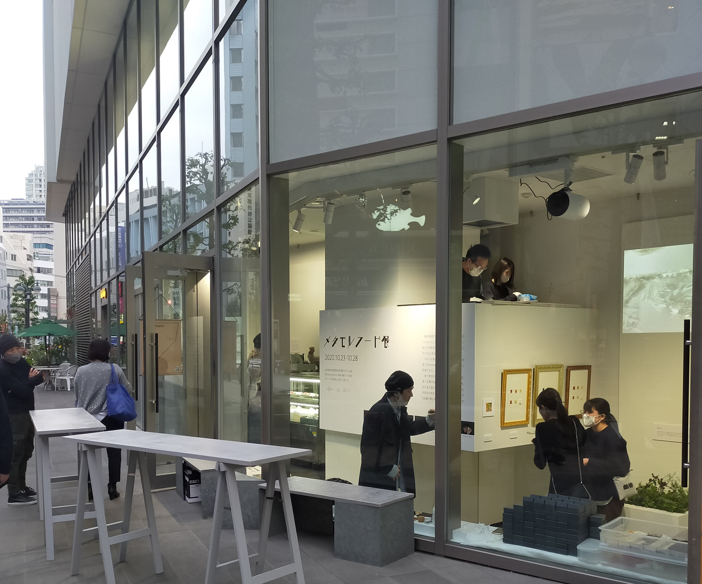
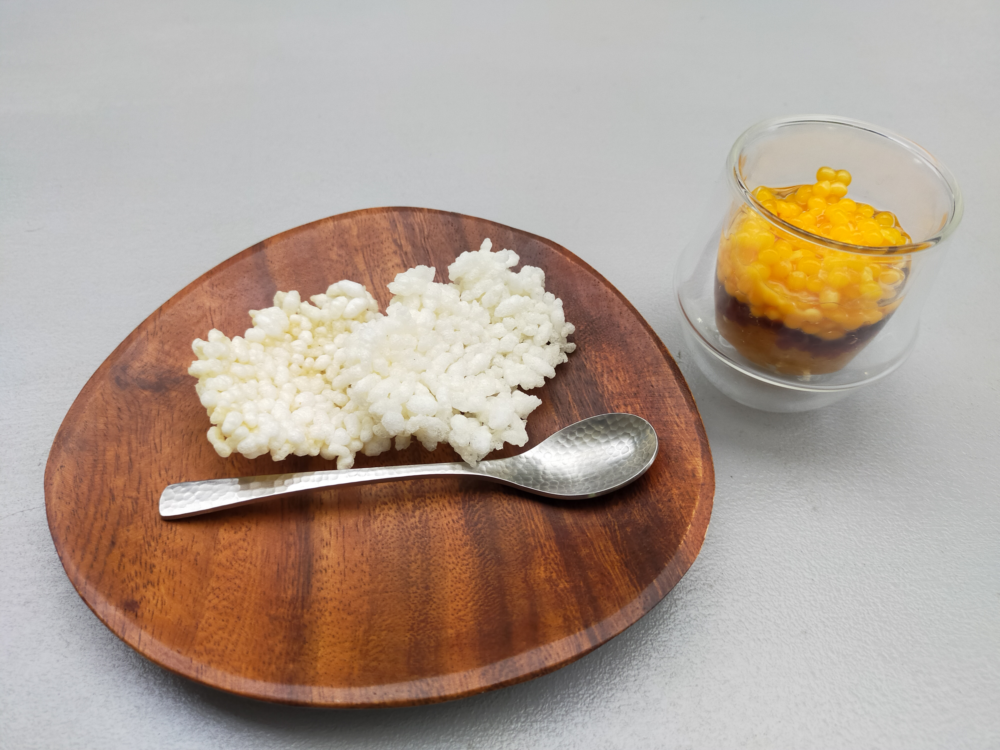

許可をいただいて掲載しています。
東京造形大学の学生がフレンチレストランのオーナーシェフの協力を受けながら、
3Dフードプリンターなどを使って食べ物を変身させることを目的とした展示会です。

展示だけでなく実際に食べられるということなのでいくつか販売している中から三つを実際に食べてみました。

一つめはシートカレーといって素材ごとにシートが作られています。
食べるときに組み合わせて食べるものです。口の中で初めて料理になるのがこのシートカレーの特徴のようです。
僕は試しに一枚ずつ食べてみました。そうするとこの香辛料がこういう味なのかとか
一つの料理に対して解像度が高くなるような感覚になりました。
一つの料理を深く知るという点で食育に使えるのではないかと思います。

二つ目はTKG OKという料理です。
これは卵かけご飯を変身させたものです。海外の人にとって生卵をそのまま食べるのは抵抗があるので、
食べれるように見た目を変えたようです。
人口いくらを作る方法をまねて粒上に卵を加工したものです。
下からだし、しょうゆ、卵と層になって入れられていてそれをご飯でできたクラッカーに載せて食べるものです。
卵は調理すると味が少し変わるが、しっかりと生卵の味がするししょうゆやだしが効いていておいしかった。
卵かけご飯というと日本の朝ごはんを連想させるが、クラッカーにディップする感じが日本食ぽくなくておしゃれに感じました。 卵かけご飯というと日本の朝ごはんを連想させるが、クラッカーにディップする感じが日本食ぽくなくておしゃれに感じました。

三つめは妖精の羽です。制作の出発点は想像上の生き物を作ってみようとスタートしました。
これは食べる前に音楽(ストーリー)をきいてから食べるもので食べ物自体は粉のようなもので口に入れると消えてなくなるし、ハーブの香りが口に広がるものでした。
これはシェフが作ったものらしいです。
料理自体にストーリーを作ってそれをお客さんに見せることで食事をエンターテインメントにする試みは面白いと思いました。